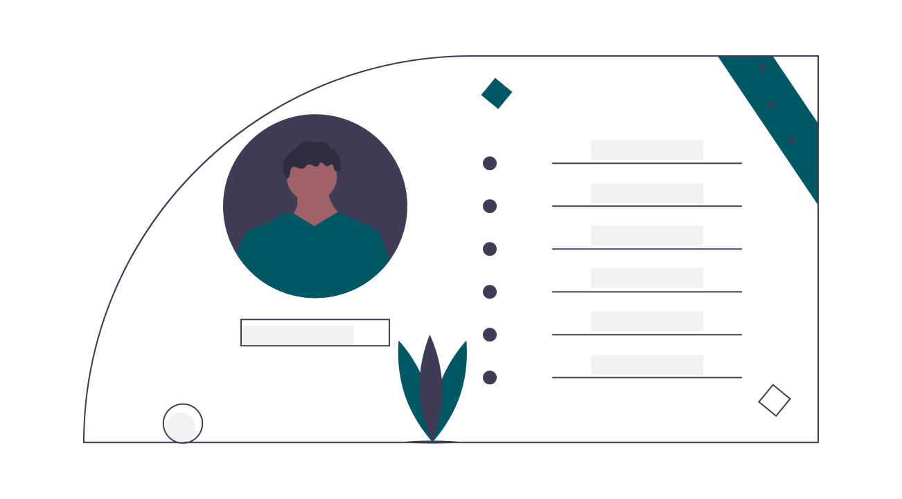

My Skills

Web Development
Experience with front-end web development using HTML5, CSS, Javascript, JQuery, and Bootstrap. Other tools used GitHub, Visual Studio Code, and CodePen.

User Interface Design
Experience developing user interface design and design systems. Utilizing user testing and iterations to enhance user experiences.

User Research
Experience conducting user-centered research using interviews, surveys, usability tests, card sorting, and analysis.